This document provides comprehensive guidance for developers creating multi-agent AI applications using the agent-swarm-kit framework. It covers the essential patterns, components, and workflows needed to design, implement, and orchestrate systems where multiple AI agents collaborate to solve complex tasks.
For information about the underlying service architecture and dependency injection, see Service Architecture. For details about AI model integration and completion adapters, see AI Integration. For specific usage examples, see Examples.
Multi-agent systems in this framework follow a layered architecture where agents operate within swarms, sessions manage client interactions, and tools enable agent capabilities. The system coordinates agent execution, message routing, and state management through a service-oriented design.

Agents are the fundamental units of intelligence in a multi-agent system. Each agent has a specific role, prompt, set of tools, and completion engine that defines its capabilities and behavior.

The addAgent function registers agent configurations in the AgentSchemaService. Key properties include:
Tools extend agent capabilities by allowing them to perform actions beyond text generation. Each tool defines its interface, validation logic, and execution behavior.

Swarms coordinate multiple agents and manage navigation between them. They define which agents are available and how clients can switch between agent contexts.

Navigation tools enable agents to transfer conversations to other specialized agents within the swarm. This allows building sophisticated workflows where different agents handle different aspects of a task.
| Navigation Function | Purpose | Usage |
|---|---|---|
changeToAgent(agentName, clientId) |
Switch to specific agent | Direct navigation to known agent |
changeToPrevAgent(clientId) |
Return to previous agent | Undo last navigation |
changeToDefaultAgent(clientId) |
Return to default agent | Reset to swarm entry point |
Tools are the primary mechanism for agents to perform actions beyond text generation. They enable agents to navigate between each other, access external systems, modify state, and perform computational tasks.

Tools implement the IAgentTool interface with specific methods for validation and execution:
interface IAgentTool {
toolName: ToolName;
type: "function";
function: ITool['function'];
call(dto: ToolCallDto): Promise<void>;
validate?(dto: ToolValidateDto): Promise<boolean> | boolean;
callbacks?: Partial<IAgentToolCallbacks>;
}
The call method receives:
Sessions represent individual client connections and manage the complete lifecycle of multi-agent interactions. They coordinate message flow, agent execution, and output emission.

| Operation | Purpose | Return Type |
|---|---|---|
complete(message, clientId, swarmName) |
Execute message and return response | Promise<string> |
execute(message, clientId, agentName) |
Execute on specific agent | Promise<void> |
run(message, clientId, agentName) |
Stateless execution | Promise<string> |
emit(message, clientId) |
Send message to session | Promise<void> |
Completion engines provide the AI capabilities for agents. They interface with various LLM providers and handle the request/response cycle for generating agent responses.

The framework includes adapters for major LLM providers:
Adapter.fromOpenAI()Adapter.fromOllama()Adapter.fromCohere()Adapter.fromNim()Adapter.fromAnthropic()Each adapter handles provider-specific request formatting, authentication, and response parsing while providing a consistent interface to the agent system.
Multi-agent systems combine all these components into cohesive applications. The typical flow involves defining agents with specialized roles, creating tools for agent capabilities, configuring swarms for orchestration, and establishing sessions for client interaction.

The test files demonstrate typical implementation patterns:
addCompletion() for LLM integrationaddTool() for agent capabilitiesaddAgent() specifying roles and toolsaddSwarm() defining agent collectionssession() for client interactionschangeToAgent()This pattern enables building sophisticated multi-agent applications where specialized agents collaborate to handle complex workflows, with seamless transitions between different AI capabilities and contexts.